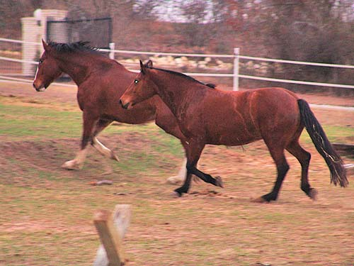
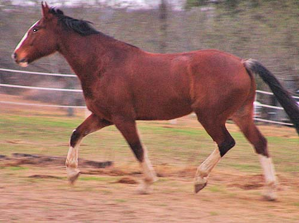
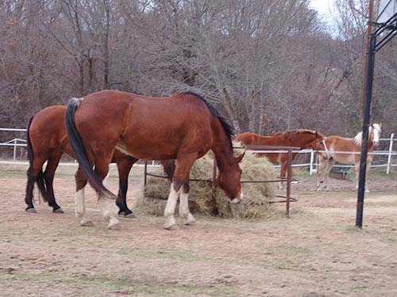
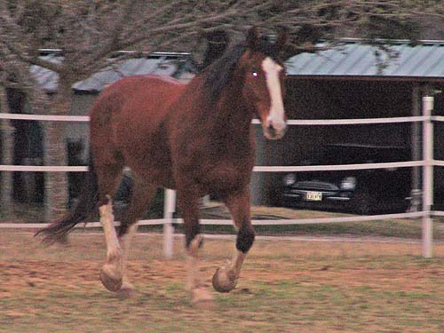
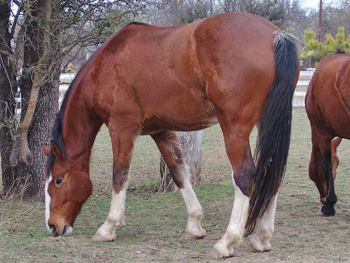
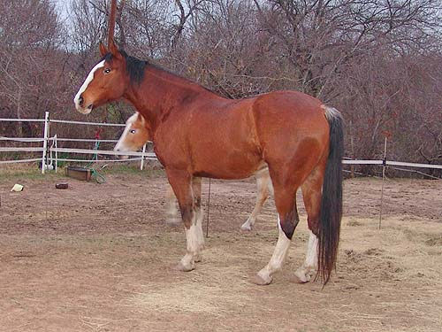
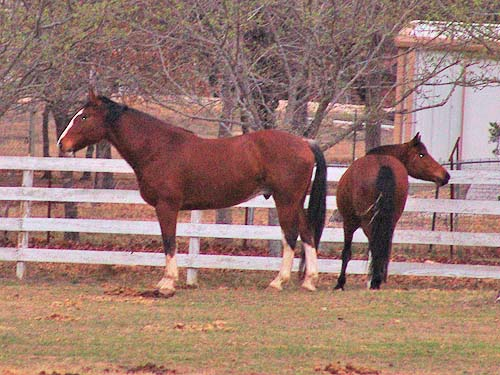
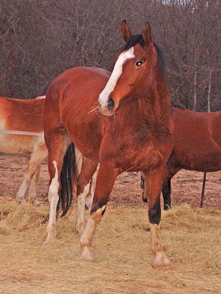

Kanuk arriving Kanuk and Inde arrived early
in the morning on Wednesday.
They settled in pretty quickly.

Kanuk, in the lead, spent a good bit
of time trotting around the pasture and getting the lay of the fences.

Not scared, but definitely curious..

He'd stop every once in a while for
a bite.

Then back to trotting around.
He did stop for a roll.

He seemed quite happy to find grass.

Watching the shipper leave.

Investigating the goats and llama
next door...

Still alert, but ready to settle down
and eat some hay. It was a warm morning, so they did work up a sweat trotting
around and investigating. Later they came over to the water trough and
stood while I hosed them over the fence.